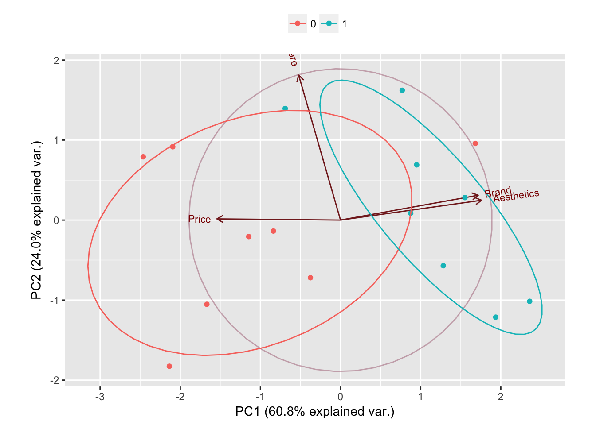
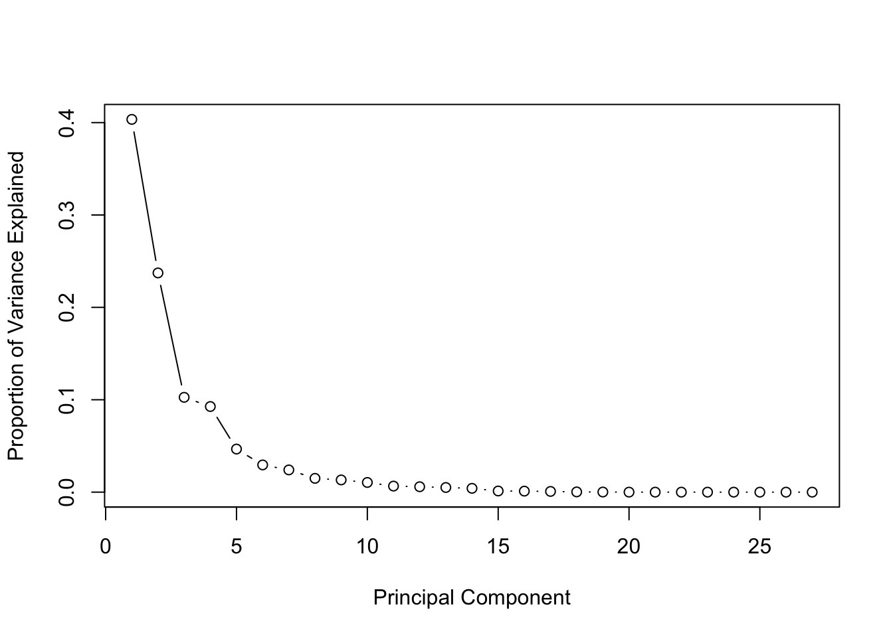
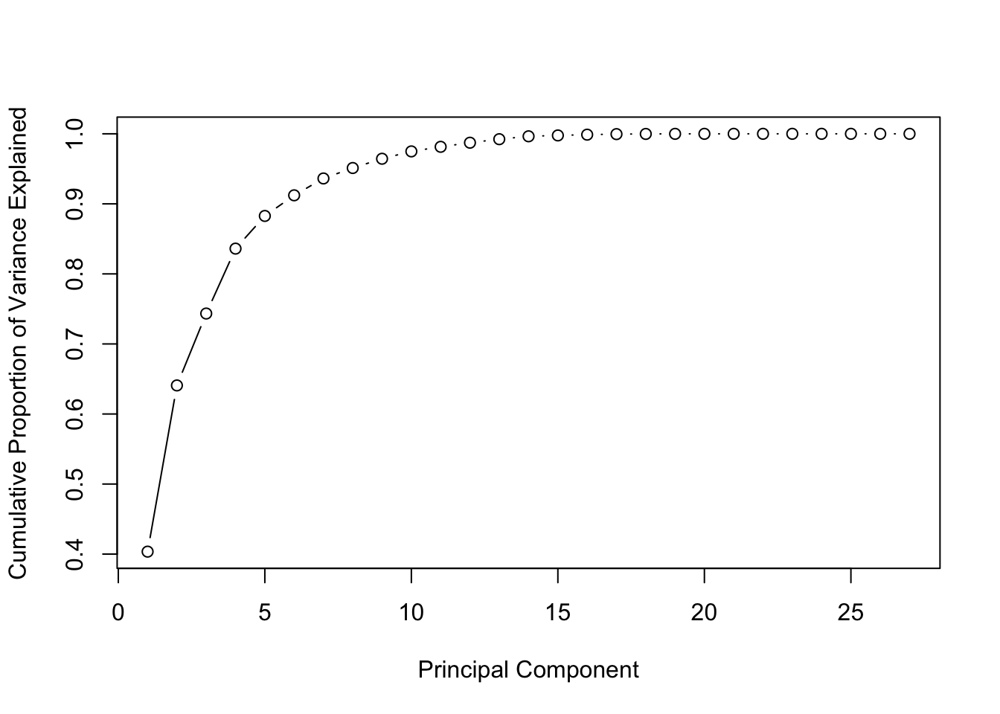

Chapter 6 Principal Component Analysis
To create a predictive model based on regression we like to have as many relevant predictors as possible. The whole difficulty resides in finding relevant predictors. For predictors to be relevant, they should explain the variance of the dependent variable.
Too many predictors (high dimensionality) and we take the risk of over-fitting.
The intuition of Principal Component Analysis is to find new combination of variables which form larger variances. Why are larger variances important? This is a similar concept of entropy in information theory. Let’s say you have two variables. One of them (Var 1) forms N(1, 0.01) and the other (Var 2) forms N(1, 1). Which variable do you think has more information? Var 1 is always pretty much 1 whereas Var 2 can take a wider range of values, like 0 or 2. Thus, Var 2 has more chances to have various values than Var 1, which means Var 2’s entropy is larger than Var 1’s. Thus, we can say Var 2 contains more information than Var 1.
PCA tries to find linear combination of the variables which contain much information by looking at the variance. This is why the standard deviation is one of the important metrics to determine the number of new variables in PCA. Another interesting aspect of the new variables derived by PCA is that all new variables are orthogonal. You can think that PCA is rotating and translating the data such that the first axis contains the most information, and the second has the second most information, and so forth.
Principal Component Analysis (PCA) is a feature extraction methods that use orthogonal linear projections to capture the underlying variance of the data. When PCR compute the principle components is not looking at the response but only at the predictors (by looking for a linear combination of the predictors that has the highest variance). It makes the assumption that the linear combination of the predictors that has the highest variance is associated with the response.
The algorithm when applied linearly transforms m-dimensional input space to n-dimensional (n < m) output space, with the objective to minimize the amount of information/variance lost by discarding (m-n) dimensions. PCA allows us to discard the variables/features that have less variance.
When choosing the principal component, we assume that the regression plane varies along the line and doesn’t vary in the other orthogonal direction. By choosing one component and not the other, we’re ignoring the second direction.
PCR looks in the direction of variation of the predictors to find the places where the responses is most likely to vary.
Some of the most notable advantages of performing PCA are the following:
- Dimensionality reduction
- Avoidance of multicollinearity between predictors. Variables are orthogonal, so including, say, PC9 in the model has no bearing on, say, PC3
- Variables are ordered in terms of standard error. Thus, they also tend to be ordered in terms of statistical significance
- Overfitting mitigation
The primary disadvantage is that this model is far more difficult to interpret than a regular logistic regression model
With principal components regression, the new transformed variables (the principal components) are calculated in a totally unsupervised way:
- the response Y is not used to help determine the principal component directions).
- the response does not supervise the identification of the principal components.
- PCR just looks at the x variables
The PCA method can dramatically improve estimation and insight in problems where multicollinearity is a large problem – as well as aid in detecting it.
6.1 PCA on an easy example.
Let’s say we asked 16 participants four questions (on a 7 scale) about what they care about when choosing a new computer, and got the results like this.
Price <- c(6,7,6,5,7,6,5,6,3,1,2,5,2,3,1,2)
Software <- c(5,3,4,7,7,4,7,5,5,3,6,7,4,5,6,3)
Aesthetics <- c(3,2,4,1,5,2,2,4,6,7,6,7,5,6,5,7)
Brand <- c(4,2,5,3,5,3,1,4,7,5,7,6,6,5,5,7)
buy_computer <- tibble(Price, Software, Aesthetics, Brand)Let’s go on with the PCA. princomp is part of the stats package.
pca_buycomputer <- prcomp(buy_computer, scale = TRUE, center = TRUE)
names(pca_buycomputer)## [1] "sdev" "rotation" "center" "scale" "x"print(pca_buycomputer)## Standard deviations:
## [1] 1.5589391 0.9804092 0.6816673 0.3792578
##
## Rotation:
## PC1 PC2 PC3 PC4
## Price -0.5229138 0.00807487 -0.8483525 0.08242604
## Software -0.1771390 0.97675554 0.1198660 0.01423081
## Aesthetics 0.5965260 0.13369503 -0.2950727 0.73431229
## Brand 0.5825287 0.16735905 -0.4229212 -0.67363855summary(pca_buycomputer, loadings = TRUE)## Warning: In summary.prcomp(pca_buycomputer, loadings = TRUE) :
## extra argument 'loadings' will be disregarded## Importance of components:
## PC1 PC2 PC3 PC4
## Standard deviation 1.5589 0.9804 0.6817 0.37926
## Proportion of Variance 0.6076 0.2403 0.1162 0.03596
## Cumulative Proportion 0.6076 0.8479 0.9640 1.00000OS <- c(0,0,0,0,1,0,0,0,1,1,0,1,1,1,1,1)
library(ggbiplot)
g <- ggbiplot(pca_buycomputer, obs.scale = 1, var.scale = 1, groups = as.character(OS),
ellipse = TRUE, circle = TRUE)
g <- g + scale_color_discrete(name = '')
g <- g + theme(legend.direction = 'horizontal',
legend.position = 'top')
print(g)
Remember that one of the disadventage of PCA is how difficult it is to interpret the model (ie. what does the PC1 is representing, what does PC2 is representing, etc.). The biplot graph help somehow to overcome that.
In the above graph, one can see that Brandand Aesthetic explain most of the variance in the new predictor PC1 while Software explain most of the variance in the new predictor PC2. It is also to be noted that Brand and Aesthetic are quite highly correlated.
Once you have done the analysis with PCA, you may want to look into whether the new variables can predict some phenomena well. This is kinda like machine learning: Whether features can classify the data well. Let’s say you have asked the participants one more thing, which OS they are using (Windows or Mac) in your survey, and the results are like this.
OS <- c(0,0,0,0,1,0,0,0,1,1,0,1,1,1,1,1)
# Let's test our model
model1 <- glm(OS ~ pca_buycomputer$x[,1] + pca_buycomputer$x[,2], family = binomial)
summary(model1)##
## Call:
## glm(formula = OS ~ pca_buycomputer$x[, 1] + pca_buycomputer$x[,
## 2], family = binomial)
##
## Deviance Residuals:
## Min 1Q Median 3Q Max
## -2.4485 -0.4003 0.1258 0.5652 1.2814
##
## Coefficients:
## Estimate Std. Error z value Pr(>|z|)
## (Intercept) -0.2138 0.7993 -0.268 0.7891
## pca_buycomputer$x[, 1] 1.5227 0.6621 2.300 0.0215 *
## pca_buycomputer$x[, 2] 0.7337 0.9234 0.795 0.4269
## ---
## Signif. codes: 0 '***' 0.001 '**' 0.01 '*' 0.05 '.' 0.1 ' ' 1
##
## (Dispersion parameter for binomial family taken to be 1)
##
## Null deviance: 22.181 on 15 degrees of freedom
## Residual deviance: 11.338 on 13 degrees of freedom
## AIC: 17.338
##
## Number of Fisher Scoring iterations: 5Let’s see how well this model predicts the kind of OS. You can use fitted() function to see the prediction.
fitted(model1)## 1 2 3 4 5 6
## 0.114201733 0.009372181 0.217716320 0.066009817 0.440016243 0.031640529
## 7 8 9 10 11 12
## 0.036189119 0.175766013 0.906761064 0.855587371 0.950088045 0.888272270
## 13 14 15 16
## 0.781098710 0.757499202 0.842557931 0.927223453These values represent the probabilities of being 1. For example, we can expect 11% chance that Participant 1 is using OS 1 based on the variable derived by PCA. Thus, in this case, Participant 1 is more likely to be using OS 0, which agrees with the survey response. In this way, PCA can be used with regression models for calculating the probability of a phenomenon or making a prediction.
I have tried to do the same with scaling the data using scale(x) and it changed absolutely nothing.
6.2 Attempt of PCA on technical indicators.
For this purpose, we have taken a random stock, added a lots of variables and have one dependent variable.
# Read the file
library(readr)
stock_data <- read_csv("AugmentedStockData/CVX.csv")Now onto create our dependent variable and stipping down the data frame to just the columns that interest us, and only get rows and columns without NA.
library(dplyr)
binary = if_else(stock_data$ret3days[25:4150] > 0.03, 1, 0)
depend_var <- stock_data[25:4150,8:34]The base R function prcomp() is used to perform PCA. PCA only works with normalized data. So we need to center the variable to have mean equals to zero. With parameter scale. = T, we normalize the variables to have standard deviation equals to 1. Normalized predictors have mean equals to zero and standard deviation equals to one.
prin_comp <- prcomp(depend_var, scale. = TRUE, center = TRUE)Let’s have a closer look at that ‘prcomp’ function.
Center and scale refers to respective mean and standard deviation of the variables that are used for normalization prior to implementing PCA.
names(prin_comp)## [1] "sdev" "rotation" "center" "scale" "x"summary(prin_comp)## Importance of components:
## PC1 PC2 PC3 PC4 PC5 PC6
## Standard deviation 3.3007 2.5311 1.6647 1.58184 1.12216 0.89194
## Proportion of Variance 0.4035 0.2373 0.1026 0.09268 0.04664 0.02947
## Cumulative Proportion 0.4035 0.6408 0.7434 0.83609 0.88273 0.91220
## PC7 PC8 PC9 PC10 PC11 PC12
## Standard deviation 0.80601 0.63478 0.59745 0.53196 0.42057 0.39748
## Proportion of Variance 0.02406 0.01492 0.01322 0.01048 0.00655 0.00585
## Cumulative Proportion 0.93626 0.95118 0.96440 0.97488 0.98143 0.98728
## PC13 PC14 PC15 PC16 PC17 PC18
## Standard deviation 0.36869 0.33376 0.18342 0.17136 0.14502 0.08488
## Proportion of Variance 0.00503 0.00413 0.00125 0.00109 0.00078 0.00027
## Cumulative Proportion 0.99232 0.99644 0.99769 0.99878 0.99956 0.99982
## PC19 PC20 PC21 PC22 PC23 PC24
## Standard deviation 0.05953 0.02347 0.01988 0.01569 0.003083 0.002066
## Proportion of Variance 0.00013 0.00002 0.00001 0.00001 0.000000 0.000000
## Cumulative Proportion 0.99996 0.99998 0.99999 1.00000 1.000000 1.000000
## PC25 PC26 PC27
## Standard deviation 2.065e-15 1.629e-15 1.194e-15
## Proportion of Variance 0.000e+00 0.000e+00 0.000e+00
## Cumulative Proportion 1.000e+00 1.000e+00 1.000e+00#outputs the mean of variables
prin_comp$center## wma3 wma5 wma7 wma9 wma11
## 2.621433e-05 7.849430e-05 1.321253e-04 1.852866e-04 2.367136e-04
## rsi_3val rsi_3dir rsi_5val rsi_5dir rsi_7val
## 5.249290e-01 2.259665e-01 5.219632e-01 5.112341e-02 5.198979e-01
## rsi_7dir rsi_9val rsi_9dir rsi_11val rsi_11dir
## 2.280991e-02 5.183530e-01 1.295840e-02 5.171323e-01 8.388109e-03
## 11arup 11ardow 11arosci 19arup 19ardow
## 5.318600e-01 4.556251e-01 7.623496e-02 5.355895e-01 4.540398e-01
## 19arosci 23arup 23ardow 23arosci ave_vol3days
## 8.154961e-02 5.418344e-01 4.505785e-01 9.125587e-02 1.393280e-03
## ave_vol5days ave_vol7days
## 3.236529e-03 4.388667e-03#outputs the standard deviation of variables
prin_comp$scale## wma3 wma5 wma7 wma9 wma11
## 0.01014433 0.01488609 0.01842084 0.02129883 0.02378999
## rsi_3val rsi_3dir rsi_5val rsi_5dir rsi_7val
## 0.25196379 1.55382629 0.19466505 0.40810579 0.16395437
## rsi_7dir rsi_9val rsi_9dir rsi_11val rsi_11dir
## 0.23886699 0.14412998 0.17015563 0.13002831 0.13287362
## 11arup 11ardow 11arosci 19arup 19ardow
## 0.37456507 0.36908431 0.65809034 0.36982907 0.36010315
## 19arosci 23arup 23ardow 23arosci ave_vol3days
## 0.64812635 0.36425219 0.35741487 0.63505784 0.18659298
## ave_vol5days ave_vol7days
## 0.22564569 0.24793982The rotation measure provides the principal component loading. Each column of rotation matrix contains the principal component loading vector. This is the most important measure we should be interested in.
#because it can be a huge matrix, let's only check the first few rows and columns.
prin_comp$rotation[1:5, 1:5]## PC1 PC2 PC3 PC4 PC5
## wma3 0.1788016 0.2543854 -0.00981180 -0.08087736 0.2431686
## wma5 0.2086344 0.2209183 0.02753808 -0.18315739 0.2465858
## wma7 0.2252186 0.1839885 0.04507260 -0.23309018 0.2168579
## wma9 0.2360512 0.1499467 0.05369872 -0.25316224 0.1770487
## wma11 0.2437448 0.1198431 0.05604151 -0.25599437 0.1376221Let’s plot the resultant principal components.
The prcomp() function also provides the facility to compute standard deviation of each principal component. sdev refers to the standard deviation of principal components.
#compute standard deviation of each principal component
std_dev <- prin_comp$sdev
#compute variance
pr_var <- std_dev^2
#check variance of first 10 components
pr_var[1:10]## [1] 10.8943784 6.4065586 2.7713407 2.5022255 1.2592331 0.7955608
## [7] 0.6496465 0.4029457 0.3569417 0.2829776We aim to find the components which explain the maximum variance. This is because, we want to retain as much information as possible using these components. So, higher is the explained variance, higher will be the information contained in those components.
To compute the proportion of variance explained by each component, we simply divide the variance by sum of total variance. This results in:
#proportion of variance explained
prop_varex <- pr_var/sum(pr_var)
prop_varex[1:20]## [1] 4.034955e-01 2.372799e-01 1.026422e-01 9.267502e-02 4.663826e-02
## [6] 2.946522e-02 2.406098e-02 1.492391e-02 1.322006e-02 1.048065e-02
## [11] 6.550995e-03 5.851611e-03 5.034607e-03 4.125722e-03 1.246026e-03
## [16] 1.087586e-03 7.789197e-04 2.668137e-04 1.312590e-04 2.039572e-05This shows that first principal component explains 41.7% variance. Second component explains 23.8% variance. Third component explains 10.4% variance and so on. So, how do we decide how many components should we select for modeling stage ?
The answer to this question is provided by a scree plot. A scree plot is used to access components or factors which explains the most of variability in the data. It represents values in descending order.
#scree plot
plot(prop_varex, xlab = "Principal Component",
ylab = "Proportion of Variance Explained",
type = "b") Or we can do a cumulative scree plot
#cumulative scree plot
plot(cumsum(prop_varex), xlab = "Principal Component",
ylab = "Cumulative Proportion of Variance Explained",
type = "b") Hence in this case the first 6 Principal Components explain over 90% of the variance of the data. That is we can use these first 6 PC as predictor in our next model.
Let’s apply this now on a logisitc regression model. For this, we need to create our binary dependent variable. So we’ll put a 1 for every ret3days > 3%, 0 otherwise.
mydata <- cbind(binary, prin_comp$x)
mydata <- as.data.frame(mydata)
model1 <- glm(binary ~ PC1 + PC2 + PC5 + PC6 + PC7, data = mydata, family=binomial)
summary(model1)##
## Call:
## glm(formula = binary ~ PC1 + PC2 + PC5 + PC6 + PC7, family = binomial,
## data = mydata)
##
## Deviance Residuals:
## Min 1Q Median 3Q Max
## -1.5159 -0.5197 -0.4511 -0.3740 2.4644
##
## Coefficients:
## Estimate Std. Error z value Pr(>|z|)
## (Intercept) -2.15924 0.05268 -40.989 < 2e-16 ***
## PC1 -0.11636 0.01514 -7.685 1.53e-14 ***
## PC2 0.03253 0.01815 1.793 0.0731 .
## PC5 -0.05541 0.04094 -1.353 0.1760
## PC6 -0.08353 0.05546 -1.506 0.1320
## PC7 -0.04292 0.05665 -0.758 0.4486
## ---
## Signif. codes: 0 '***' 0.001 '**' 0.01 '*' 0.05 '.' 0.1 ' ' 1
##
## (Dispersion parameter for binomial family taken to be 1)
##
## Null deviance: 2851.7 on 4125 degrees of freedom
## Residual deviance: 2784.3 on 4120 degrees of freedom
## AIC: 2796.3
##
## Number of Fisher Scoring iterations: 5mydata <- cbind(binary, prin_comp$x)
mydata <- as.data.frame(mydata)
checkit <- fitted(model1)
checkit <- cbind(binary, checkit)
checkit <- as.data.frame(checkit)
head(checkit %>% filter(binary == 1), 20)## binary checkit
## 1 1 0.18260120
## 2 1 0.18252003
## 3 1 0.21606180
## 4 1 0.21251118
## 5 1 0.11869114
## 6 1 0.14243678
## 7 1 0.15250266
## 8 1 0.08137055
## 9 1 0.09081918
## 10 1 0.07178808
## 11 1 0.08675686
## 12 1 0.08601504
## 13 1 0.05538413
## 14 1 0.13325771
## 15 1 0.11428528
## 16 1 0.13216528
## 17 1 0.08095967
## 18 1 0.07966423
## 19 1 0.09559465
## 20 1 0.16822463head(checkit %>% filter(checkit > 0.2), 20)## binary checkit
## 1 0 0.2199392
## 2 1 0.2160618
## 3 1 0.2125112
## 4 0 0.2136409
## 5 1 0.2187997
## 6 1 0.2116685
## 7 0 0.2070526
## 8 0 0.2038604
## 9 0 0.2097841
## 10 0 0.2034205
## 11 0 0.2187273
## 12 1 0.2275500
## 13 1 0.2281150
## 14 0 0.2183669
## 15 0 0.2060439
## 16 0 0.2201554
## 17 0 0.2692442
## 18 1 0.2772148
## 19 1 0.2574167
## 20 1 0.2005783Really not very successful model.
6.3 Doing PCA and PCR with the PLS package
Same as before we can not have NA data in our set.
library(pls)##
## Attaching package: 'pls'## The following object is masked from 'package:caret':
##
## R2## The following object is masked from 'package:stats':
##
## loadingsdepend_var <- stock_data[25:4150,8:35]
pcr_model <- pcr(ret3days~., data = depend_var, scale = TRUE, validation = "CV")In oder to print out the results, simply use the summary function as below
summary(pcr_model)## Data: X dimension: 4126 27
## Y dimension: 4126 1
## Fit method: svdpc
## Number of components considered: 27
##
## VALIDATION: RMSEP
## Cross-validated using 10 random segments.
## (Intercept) 1 comps 2 comps 3 comps 4 comps 5 comps 6 comps
## CV 0.02651 0.0265 0.02651 0.02652 0.02653 0.02646 0.02646
## adjCV 0.02651 0.0265 0.02651 0.02652 0.02653 0.02646 0.02645
## 7 comps 8 comps 9 comps 10 comps 11 comps 12 comps 13 comps
## CV 0.02649 0.02648 0.02646 0.02647 0.02647 0.02647 0.02647
## adjCV 0.02648 0.02648 0.02645 0.02646 0.02646 0.02646 0.02646
## 14 comps 15 comps 16 comps 17 comps 18 comps 19 comps
## CV 0.02647 0.02649 0.02648 0.02651 0.02651 0.02652
## adjCV 0.02646 0.02648 0.02647 0.02650 0.02650 0.02651
## 20 comps 21 comps 22 comps 23 comps 24 comps 25 comps
## CV 0.02653 0.02653 0.02654 0.02652 0.02651 0.02650
## adjCV 0.02651 0.02652 0.02652 0.02650 0.02650 0.02646
## 26 comps 27 comps
## CV 0.02655 0.02660
## adjCV 0.02645 0.02648
##
## TRAINING: % variance explained
## 1 comps 2 comps 3 comps 4 comps 5 comps 6 comps 7 comps
## X 40.3495 64.0775 74.3418 83.609 88.2731 91.22 93.626
## ret3days 0.2797 0.3122 0.3381 0.359 0.9058 1.09 1.103
## 8 comps 9 comps 10 comps 11 comps 12 comps 13 comps
## X 95.118 96.440 97.488 98.14 98.728 99.232
## ret3days 1.122 1.521 1.523 1.56 1.685 1.738
## 14 comps 15 comps 16 comps 17 comps 18 comps 19 comps
## X 99.644 99.769 99.878 99.956 99.982 99.996
## ret3days 1.745 1.746 1.796 1.797 1.847 1.865
## 20 comps 21 comps 22 comps 23 comps 24 comps 25 comps
## X 100.0 99.999 100.000 100.000 100.000 100.000
## ret3days 1.9 1.997 2.017 2.166 2.215 2.268
## 26 comps 27 comps
## X 100.000 100.000
## ret3days 2.594 2.632As you can see, two main results are printed, namely the validation error and the cumulative percentage of variance explained using n components. The cross validation results are computed for each number of components used so that you can easily check the score with a particular number of components without trying each combination on your own. The pls package provides also a set of methods to plot the results of PCR. For example you can plot the results of cross validation using the validationplot function. By default, the pcr function computes the root mean squared error and the validationplot function plots this statistic, however you can choose to plot the usual mean squared error or the R2 by setting the val.type argument equal to “MSEP” or “R2” respectively
# Plot the root mean squared error
validationplot(pcr_model) What you would like to see is a low cross validation error with a lower number of components than the number of variables in your dataset. If this is not the case or if the smalles cross validation error occurs with a number of components close to the number of variables in the original data, then no dimensionality reduction occurs. In the example above, it looks like 3 components are enough to explain more than 90% of the variability in the data. Now you can try to use PCR on a traning-test set and evaluate its performance using, for example, using only 6 components
What you would like to see is a low cross validation error with a lower number of components than the number of variables in your dataset. If this is not the case or if the smalles cross validation error occurs with a number of components close to the number of variables in the original data, then no dimensionality reduction occurs. In the example above, it looks like 3 components are enough to explain more than 90% of the variability in the data. Now you can try to use PCR on a traning-test set and evaluate its performance using, for example, using only 6 components
# Train-test split
train <- stock_data[25:3000,8:35]
y_test <- stock_data[3001:4150,35]
test <- stock_data[3001:4150,8:34]
pcr_model <- pcr(ret3days~., data = train,scale =TRUE, validation = "CV")
pcr_pred <- predict(pcr_model, test, ncomp = 6)
mean((pcr_pred - y_test)^2)## [1] 0.00056001236.4 References.
Here are the articles I have consulted for this research.
Computing and visualizing PCA in R This is where we learned about the `ggbiplot
Practical Guide to Principal Component Analysis (PCA) in R & Python
Data Mining - Principal Component (Analysis|Regression) (PCA)
PRINCIPAL COMPONENT ANALYSIS IN R A really nice explanation on the difference between the main packages doing PCA such as
svd,princompandprcomp. In R there are two general methods to perform PCA without any missing values: The spectral decomposition method of analysis examines the covariances and correlations between variables, whereas the singular value decomposition method looks at the covariances and correlations among the samples. While both methods can easily be performed within R, the singular value decomposition method is the preferred analysis for numerical accuracy.
Although principal component analysis assumes multivariate normality, this is not a very strict assumption, especially when the procedure is used for data reduction or exploratory purposes. Undoubtedly, the correlation and covariance matrices are better measures of similarity if the data is normal, and yet, PCA is often unaffected by mild violations. However, if the new components are to be used in further analyses, such as regression analysis, normality of the data might be more important.